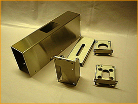
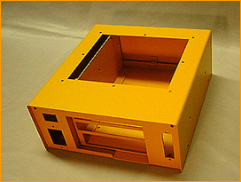
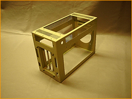
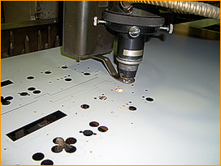
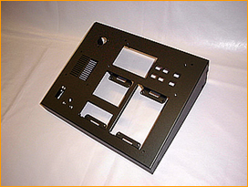
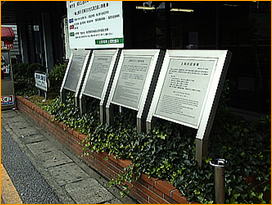
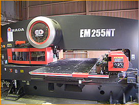

埼玉県上尾市・精密板金加工
0.1ミリから、
1個から。
寿産業は、薄板の精密板金を得意とする会社です。主に扱うのは板厚0.1〜0.6mm、ロットは1〜100個。レーザーとNCパンチプレスで切り、曲げて、溶接して、メッキ・塗装・組立まで通してお渡しします。
昭和40年の設立から、電子・電気部品、医療機器のケース、シャーシ、制御盤、看板をつくってきました。ご相談・お見積りは無料です。

ステンレスケース（研磨）
アルミケース
筐体
レーザー切断
薄板と小ロット
大きな工場が
受けない仕事を。
量産設備を持つ工場にとって、板厚0.2mmの部品を10個だけ、という注文は割に合いません。当社はその逆です。薄い板と少ない数を前提に、段取りと設備を組んできました。
板厚
0.1〜0.6mm
三菱レーザーによる極薄板の切断・穴あけ。曲線の切り出しも得意です。
ロット
1〜100個
試作1個から。全加工データをデータベース化しているので、リピート品は速く、同じものが出ます。
大量生産のご相談もお受けします。少ロットが得意、というだけで、上限があるわけではありません。
つくるもの
箱、シャーシ、盤、看板。
主要生産品は、電子・電気部品や医療機器のケース、シャーシ類、制御盤、各種看板類です。
- ステンレスケース（研磨）
- アルミケース
- 筐体

制御盤
看板類
できること
切ってから、
納めるまで。
- 1
ブランク加工
レーザー加工機とNCパンチプレスで切断・穴あけ。アルミ・ステンレス・鉄板・その他金属（一部樹脂可）。
- 2
曲げ・穴仕上げ
ベンダーでの曲げ加工、ネジたて（タッピング）、皿とり。
- 3
溶接
アルゴン溶接、スポット溶接。
- 4
表面処理・仕上げ
協力工場でのメッキ・塗装・印刷・機械加工。
- 5
電装・組立
組み上げた状態で納品できます。
データのやり取り
- 3D CADiges／step／sat／stl／wrl ほか。複数図面のアッセンブル確認も行います。
- 2D CADdwg／dxf ほか
- データベース全ての加工データを保存。リピート品への対応と高速化、反復性の向上につながっています。
- 環境対応RoHS指令対応。JGPSSI、JAMP-AIS にも対応可能です。
設備紹介
機械の顔ぶれ
| 設備名 | 台数 |
|---|---|
| 三菱レーザー加工機 | 1台 |
| アマダ NCT（タレパン） | 2台 |
| NCベンダー | 4台 |
| CNCタッピングセンター（NCフライス） | 1台 |
| アルゴン溶接機 | 3台 |
| バリ取り機 | 1台 |
| シャーリング他 板金加工設備 | 一式 |
| 2D CAD／CAM 装置 | 3台 |
| 3D CAD／CAM 装置 | 1台 |

アマダ NCターレットパンチプレス- レーザー切断機
よくあるご質問
はじめての方へ
1個だけでも作ってもらえますか。
承ります。小ロット1〜100個が当社の主戦場です。試作品の製作も短納期・低コストで対応します。ご相談・お見積りは無料です。
どのくらい薄い板まで加工できますか。
主に薄板0.1〜0.6mm程度を扱っています。三菱レーザーによる極薄板の切断・穴あけが得意です。
どんな材質に対応していますか。
アルミ板・ステンレス板・鉄板・その他金属に対応します。一部樹脂も可能です。
メッキや塗装までお願いできますか。
できます。切断・穴あけ・曲げ・溶接の一連の加工に加え、協力工場でのメッキ・塗装・印刷・機械加工、表面処理、電装・組立まで一貫生産体制を整えています。
3Dデータで入稿できますか。
3D CAD（iges、step、sat、stl、wrl ほか）と2D CAD（dwg、dxf ほか）でのデータ受け渡しに対応しています。3D CADで複数図面のアッセンブル確認も行います。
RoHSには対応していますか。
RoHS指令に対応しています。JGPSSI、JAMP-AIS にも対応可能です。
企業情報
寿産業株式会社
- 会社名
- 寿産業株式会社（Kotobuki Industry Co., Ltd.）
- 業種
- 精密板金加工
- 設立
- 昭和40年5月1日（1965年）
- 資本金
- 1,000万円
- 所在地
- 〒362-0001 埼玉県上尾市上225
- 電話・FAX
- Tel. 048-771-3680 ／ Fax. 048-771-3690
- 敷地・建坪
- 敷地 1,000m²／建坪 500m²
- 取引銀行
- みずほ銀行 上尾支店／武蔵野銀行 上尾支店／足利銀行 桶川支店
図面かデータを、お送りください。
板厚・材質・数量が分かれば、お見積りをお出しします。ご相談・お見積りは無料です。